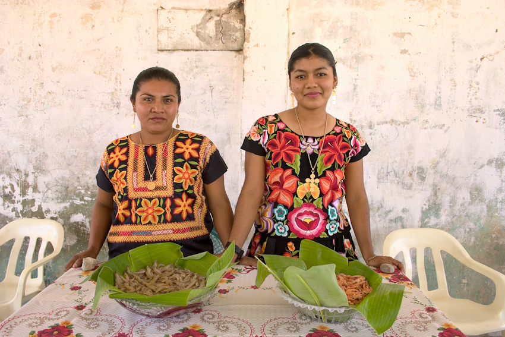
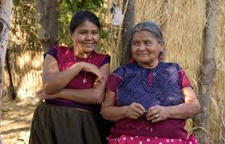
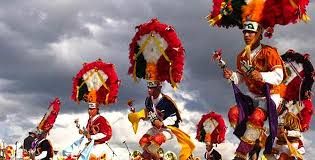
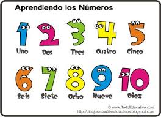

Los huaves son también conocidos como mareños o huazantecos. El término huave fue acuñado por los zapotecos para referirse a la "gente que se pudre en la humedad", los huaves clasifican a los hombres en tres categorías.

este grupo habita un litoral del Golfo de Tehuantepec que ocupa las dos terceras partes de una barra de 40 km que separa al océano Pacífico de dos grandes lagunas, conocidas como Mar Superior y Mar Inferior.
imagen
significado
audio

lengua

festividad

nomenglatura
son nominalmente católicos desde el siglo XVI. Las prácticas y los cultos que gobiernan su vida religiosa son, en su gran mayoría, instituciones que provienen de varios siglos de influencia dominica, fruto de un proceso de evangelización discontinuo.